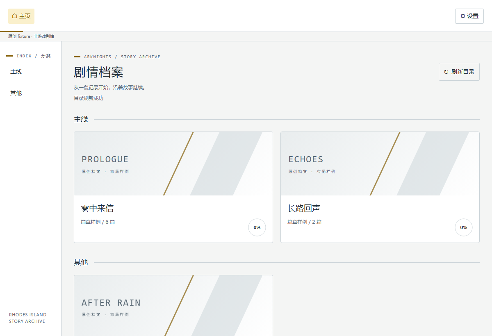
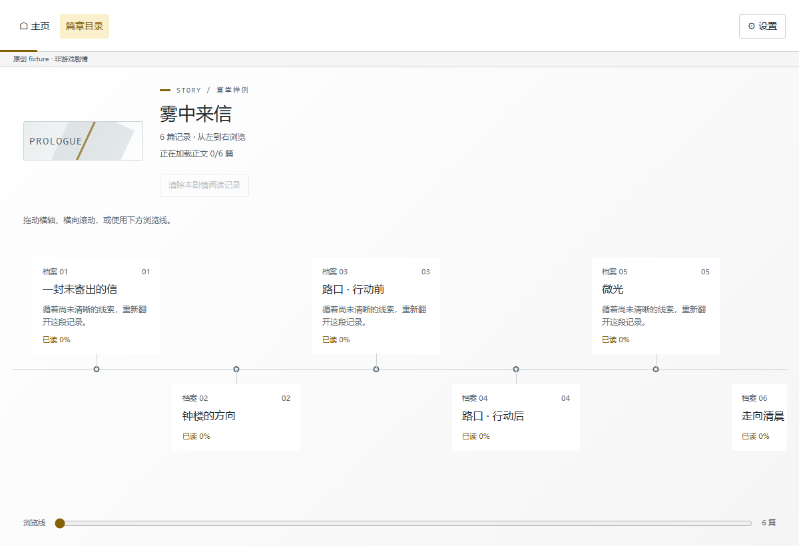
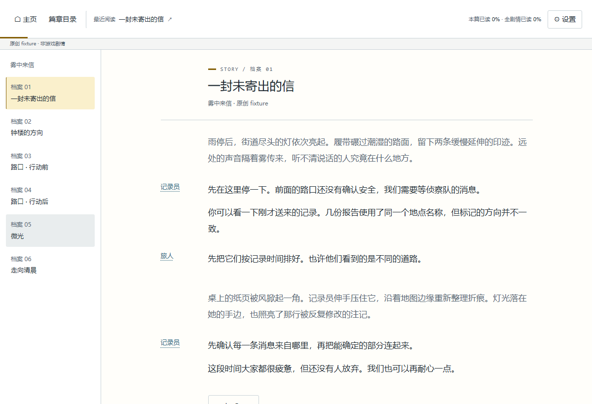

先找到，想读的那一篇
按分类浏览剧情，沿横向篇目轴查看章节，再进入连续的纵向正文。分支保留，共同后续只读一次。
浏览目录 → 选择篇目独立开源 · 本机阅读
一份为桌面阅读准备的明日方舟剧情阅读器。
浏览 PRTS 目录，让文字、画面和阅读位置各就其位。
正常阅读无需模型 API key。个人维护，非官方项目。
原创示意 / 雾中来信
雨停后，街道尽头的灯依次亮起。
A QUIETER WAY TO READ
从选择一篇，到下一次回来，阅读器照顾那些容易打断阅读的小事。
按分类浏览剧情，沿横向篇目轴查看章节，再进入连续的纵向正文。分支保留，共同后续只读一次。
浏览目录 → 选择篇目正文与图片从 PRTS 按需取得。立绘点击查看，CG 原位展开；不必先下载整库，也不用离开当前段落。
按需加载 → 原位阅读上次位置与最远进度分别保存。回看不会倒退进度，清理内容缓存也不会清除阅读记录。
本机保存 → 继续阅读INSIDE THE READER
以下为阅读器的实际界面。
画面使用原创测试内容，不含游戏素材。



界面示例：原创「雾中来信」测试数据 · 浅色主题 · 不是游戏截图
需要 Node.js ≥26.13.0、npm ≥12.2.1，以及支持本插件入口的桌面宿主。请先查看当前验证范围。
按安装文档配置桌面入口。升级与卸载前正常关闭旧阅读会话，保留本机的独立阅读记录目录。
A FEW THINGS TO KNOW
不能。这里仅介绍阅读器，并展示原创测试界面。网站不托管剧情正文或游戏图片，也不提供正文、图片代理。
阅读器将记录保存在你电脑上的独立数据目录，与内容缓存分开。网页不读取你的阅读记录；具体路径与保留规则见仓库文档。
这是个人维护的独立开源工具，不隶属于鹰角网络、PRTS 或 OpenAI。原创代码采用 MIT；游戏与 PRTS 内容的权利仍属于相应权利人，公开可访问不等于获得再分发许可。
故事很长。
慢慢读，也很好。